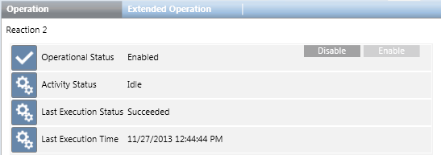

When you select a reaction object in System Browser, its properties and commands display in the Operation tab.

Property
Description
Commands
Operational Status
Indicates whether the reaction is enabled or disabled, and the reason why if it is disabled:
Enabled: The reaction is currently active, and the Disable command is available in all Activity Status conditions, except Executing.
Disabled: The reaction is currently inactive, and the Enable command is available.
Disabled for invalid configuration: The reaction is currently inactive owing to its invalid configuration. The Disable and Enable commands are unavailable.
Disabled for missing license: The reaction is currently inactive because some or all required license options are missing. If the reaction was enabled and the license is lost, Disable and Enable commands are unavailable. If the reaction was disabled, when the license is lost, the Enable command will appear available, but you still cannot enable the reaction.
Disable: Disabling a reaction prevents it from being triggered, while still retaining the reaction within the system. For example, you might do this for reactions that are not yet complete or ready to be put into general use. You can disable a reaction if it is Enabled and currently Idle.
Enable: Enabling a reaction means that it will be executed when its trigger conditions occur. If a reaction is disabled, you need to enable it first before Desigo CC can execute it. You can enable a reaction if it is currently Disabled (but not due to missing license or invalid configuration).